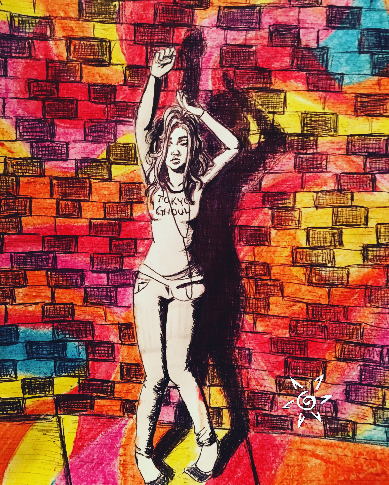
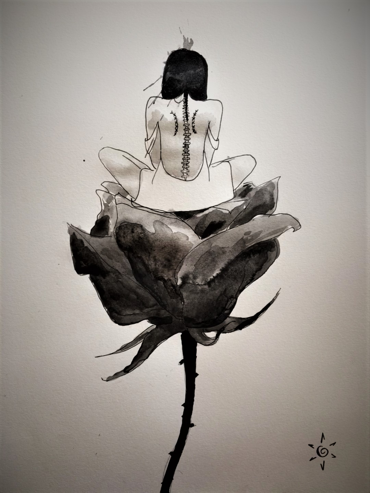
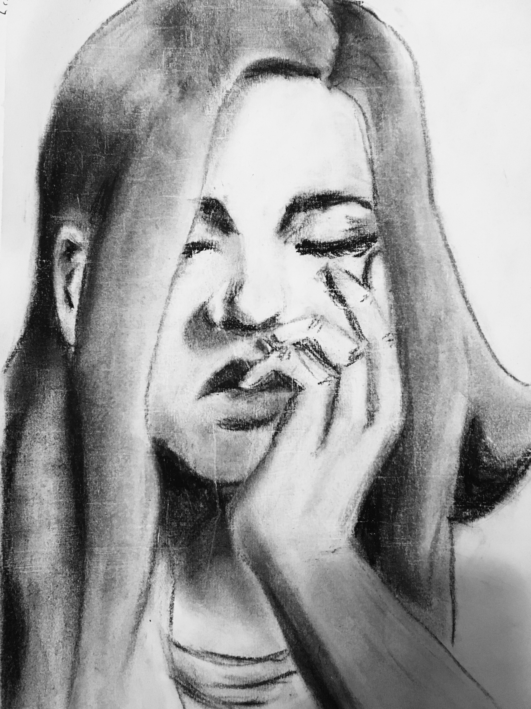
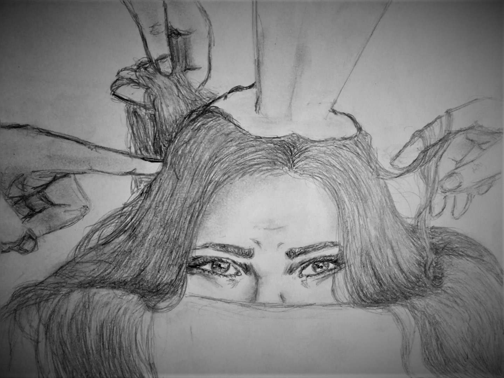
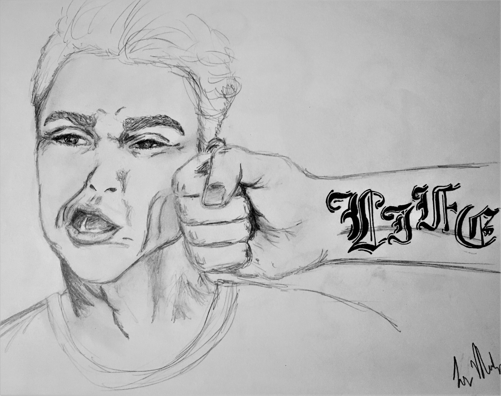

THROUGH THESE WORKS I WANT TO SHOW THE FACES I CAN'T MAKE IN PERSON
MASKS

The original work is a pen on paper composite sketch. It shows one face making three different expressions. I intended it to look like a single face to show the different sides to that one person.
COLOR OF MUSIC

This work consists of pen and crayon on paper. My intention was to express the way music affects me and how it can amplify a feeling or mood.
HIDING

The original work is ink and pen on paper. A girl sits atop a rose, but she is turned away, her back facing the foreground. Although she is still visible, she is hiding behind herself.
IN THOUGHT

This work is charchoal on paper. It is a portrait of a girl with closed eyes. As if she were sleeping, she rests her head on her hand and dreams.
PRESSURE

This work is a graphite on paper sketch. A girl is hunched over while being poked and grabbed at by multiple hands.
SUCKER PUNCH

The original work is graphite on paper. It shows a man being punched in the face. Along the arm of the hand is a tattoo that reads 'Life'.